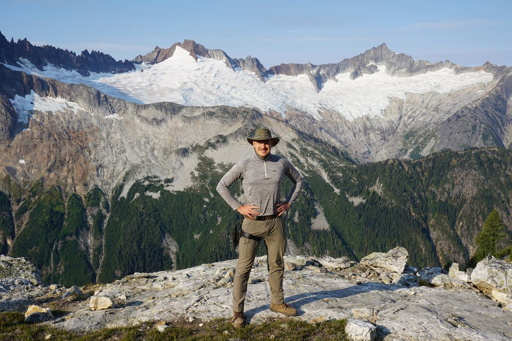

The route
Multi-day loops and traverses built around what a park does best: high passes, river canyons, remote basins. Many routes leave the trail entirely for cross-country sections planned with maps, terrain study, and time on the ground.
Small-group backpacking expeditions
Backcountry Boone plans and leads 4–6 day backpacking routes through America's national parks, including off-trail sections most visitors never see. Small crews, honest miles, and the kind of trip you talk about for years.
Expeditions
Multi-day loops and traverses built around what a park does best: high passes, river canyons, remote basins. Many routes leave the trail entirely for cross-country sections planned with maps, terrain study, and time on the ground.
Permits, itinerary, water and resupply logistics, gear lists, and training guidance are handled before you show up. You get a clear picture of the mileage, elevation, and difficulty. No surprises except the good kind.
Groups stay small. Trips have grown by word-of-mouth, friends and friends of friends, and that's the culture: capable, curious people who'd rather earn a view than drive to it.
Safety & standards

About
Boone started planning multi-day routes for friends because the trips he wanted to take didn't exist as products. Too long for a weekend crowd, too far off-trail for a tour bus. Those trips kept filling by word-of-mouth, so Backcountry Boone became a company.
The goal hasn't changed: get good people deep into the best terrain in the country, safely, and have a ridiculous amount of fun doing it.
From the field
Tell me what kind of suffering you enjoy and how many days you can disappear for.
boone@backcountryboone.com